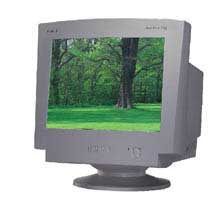
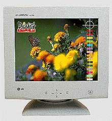

|
|
| 当前位置：电脑报电子版 > 1999 年 > 44 期 > 硬件周刊 > 主流显示器的选购 |
| 《 主流显示器的选购 》 |
| 显示器是计算机的重要部件，从价格角度上看，通常占购机预算的三分之一，有时甚至会更多；从视觉角度上看，显示器也许是电脑中最大的配件，当然也是最直观、最显眼的部分；从健康角度上看，关系到对心灵之窗——眼睛的保护，不可不谓重中之重。所以，显示器的选购不能马虎了之。
一、确定主流显示器 讨论主流显示器，先要搞清楚主流显示器的范围，昂贵的液晶显示器当然不能算主流，我们要谈的，肯定是最常见的CRT显示器，即阴极射线管显示器。主流显示器的特征可以从这么几个方面来分析：屏幕尺寸、性能指标和购买价格。1．屏幕尺寸。这一方面不用费太多口舌。现在电脑市场上14英寸的显示器已经很难找了，15英寸的显示器所占的比例也越来越少，而17英寸显示器正逐渐成为主力军，其价位已经比较容易被接受，而且进一步降价是必然的事情。如果你能承受，完全应当直接考虑选择一台17英寸的显示器，如果实在预算紧张，15英寸的显示器也未必不是好的选择。 v 2．性能指标。显示器的性能指标实际有不少，可以细分成以下具体方面。 显示器表面构造。这是由显示器所采用的显像管决定的。球面管显示器已经被淘汰，目前市场上的主流应该是平面直角显示器和柱面显示器，最先进的当然是刚问世不长的纯平面显示器，或者叫完全平面显示器，但此类显示器仍比较昂贵，只有少数的显示器价格跌进了主流显示器的范围。 点距。点距越小显示器画面就越清晰自然，现在大多数主流显示器仍然是0.28mm，不少0.26mm、0.25mm甚至更小点距的显示器也纷纷成为主流，提供了更好的选择。 分辨率、垂直刷新频率。把这两个性能放在一块是因为它们是相辅相成的。目前主流显示器至少应当能达到垂直刷新频率85Hz下，分辨率1024×768的水平，最高分辨率至少应为1280×1024（垂直刷新频率60Hz）。这个要求可以说一点儿也不高。 带宽。这是衡量显示器综合性能的最直接的重要指标。主流显示器带宽至少应该能达到80MHz，能上到100MHz或110MHz以上则更好。 辐射及环保标准。主流显示器都能达到MPRⅡ标准，大多数也都应该具备TCO95标准，鉴于对健康的影响，能达到TCO99标准当然更好。省电节能方面，能满足EPA能源之星绿色标准是主流显示器的必须指标，当然，现在显示器没达到这个标准的已经不常见了。 其他方面。可视面积越大、输入接口、调控方式及调节功能越多等等，对于主流非主流显示器的划分，影响不大，就看个人选择了。 3．购买价格。价格也许是决定主流显示器范围最直接的因素。15英寸显示器普通管1600元以下，柱面管（特丽珑、钻石珑）2000元以下，17英寸显示器普通管2500元以下，柱面管3000元以下，高档柱面管和完全平面显示器4000元以下，都应当算是主流显示器。 二、主流显示器的选购要点 1．选购策略及心态。很多朋友在购买电脑时，往往先考虑CPU、主板、3D显示卡等等配件，到后来才在所剩不多的预算中，拿出一部分购买显示器，这样最后的选择不尽如人意。不过要知道显示器是电脑中最保值的配件之一，其技术升级换代比较缓慢，不容易被淘汰，是最值得一次到位的投资。同样在选购心态上，盲目追新追好追大亦完全没有必要，应当清楚地分析自己的需求，普通用途就选普及型、家用型的，充其量对辐射等健康指标严要求就可以了；搞设计、搞图形图像的再选高档次的。明确需求后，确定预算及最看重的指标，然后尽可能挑选一台好一些的显示器。2．选择显像管与品牌。首先确定选择多大尺寸的显示器后，就可以确定显像管的类型，大家常见的普通管、柱面管或是完全平面管，性能依次由低到高，显示质量当然也越来越好。需注意的是，柱面管中索尼特丽珑管偏暖色调，画面略显偏红；而三菱钻石珑管则偏冷色调，画面略偏蓝。完全平面管也有很多种厂家的，根据个人喜好和价格综合考虑。显示器的外观也十分重要，与选择品牌一样，完全取决于自己的喜好。其实采用同一种显像管的显示器，档次基本差不多，最终的选择往往决定于对某一外观设计的喜爱和对某一厂家品牌的信任。确定了显像管，点距这一重要参数也就随之定了。普通管显示器点距多为0.28mm，少数可以达到0.26mm，柱面管显示器叫栅距，目前都是0.25mm，完全平面显示器高一些，0.25mm、0.24mm的甚至更高的都有，但也贵得出奇。 3．确定具体型号。选择显示器的具体型号时需注意，现在有些厂商为了迎合消费者心理，吸引购买者，往往喜欢在宣传中引出一些技术参数，利用大多数用户对这些技术概念上的混淆，用类似技术参数或用不确切的数据来掩盖真正的技术参数，造成消费者选择的失误，有误导之嫌。例如水平点距这个概念，很容易与真正的点距搞混，水平点距为0.24mm的，点距其实是0.28mm。也许你会被经销商举出的或宣传资料上列出的各种技术参数搞得晕头转向，但只要认准几点，就可以了：带宽以MHz为单位，值越高越好，带宽越大，在高分辨率下就越稳定；分辨率和垂直刷新频率要一起看，假设一台显示器的最高分辨率为1600×1200，此时垂直刷新频率在60Hz以上的才是可实用最高分辨率，否则这个最高分辨率就是假的。在同一分辨率下，垂直刷新频率上得越高说明该显示器越好，对于主流显示器来说，15英寸显示器能支持1024×768分辨率下的85Hz刷新频率，17英寸的能支持1280×1024分辨率下的85Hz刷新频率就能满足要求了。其实这两个值，是取决于带宽高低的，这就是为什么说带宽是衡量显示器综合性能的指标了。辐射及环保标准，通过得越多当然是越好，但最重要的就是TCO系列，有TCO92、TCO95、TCO99三种，越来越严格，须注意有的显示器TCO认证属于备选，要的话还要多加MONEY的，这个要问清楚。其它方面就都不算太重要了，像水平扫描频率，范围越宽越好；可视尺寸越大越好；调节功能越多越好；功耗越小越好；专业一点的显示器除15针D型接口以外，还会多提供一个D－SUB/BNC输入接口；是否支持USB接口，支持即插即用，防眩、防静电，超清晰涂层，短管、短机身设计等等，越丰富越好，这些各家产品、各种型号都不一样，自己看着选吧。 4．主观测试。主观评测是最重要的，因为显示器毕竟是买回去看的，那么选购的时候“看”就显得十分重要了。那么看些什么呢？首先看外观，外形是否满意、机身是否整洁干净无划痕、操控是否方便，按键或者飞梭使用是否灵活舒适，调控菜单是否中文等等，这些是主观因素，由自己的喜好决定。商家用来演示的画面，一般都是经过特制的，有时能掩盖一些显示器的缺陷，所以，最好提出到Windows操作系统中，自己亲手操作检验。最好亲自操作观察一下显示效果、文字清不清晰、四角和屏幕边缘区字迹有无明显模糊变形、重影、抖动等现像。可以拿一些花草等鲜艳的图案检验色彩均不均匀，图像色彩饱和度及柔和度如何，图像细节表现层次感、立体感如何，图像是否清晰、鲜艳、亮丽，亮度够不够大，有没有明显的失真、瑕疵等等，特别注意图像的边缘，有无扭曲变形、过渡是否平和。还应该把屏幕设成纯白色，看看有无偏色现象。可能的话可以边看边调节，有时在转换中可以发现不少问题。性能参数再好，直观的检测通不过也不行。记得还要检查接线等是否牢固等等，才能算大功告成。 最后要注意的就是售后服务。要选择有信誉的品牌及商家，确保日后有较好的维修保障服务。这样，相信能选择到一台中意的显示器了。有兴趣的朋友还可以浏览我们的网站(http://www.pcbirds.com)的有关内容。 |
| 下载本期推荐软件 | 页 首 |
| 《电脑报》版权所有，CPCW网站编辑部设计制作发布 |